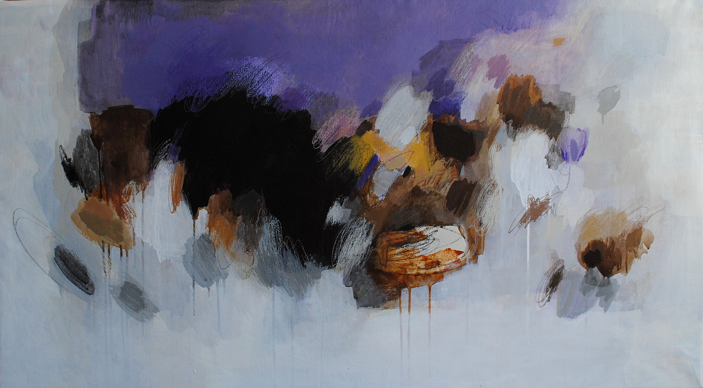

EduardoBonelliebonelli@stevens.edu

News
-
[3/May/23]
2023 Distinguished Teaching Faculty, Student Government
Association.
-
[5/Feb/23]
Consider submitting a paper to LSFA 2023,
co-located with FSCD 2023.
-
[1/Jul/21 - 30/Jun/22]
Associate Department Chair for Graduate Studies, CS Dept.
Publications
[dblp]
2024
2023
2022
2020
2019
- Mauricio Ayala-Rincón, Eduardo A Bonelli, Juan Edi, Andrés Ezequiel Viso: Typed Path Polymorphism.
Theoretical Computer Science. 781: 111-130 (2019).
2018
2017
2016
2015
2014
- Gabriela Steren, E.B.:
Intuitionistic Hypothetical Logic of Proofs. Electr. Notes Theor.
Comput. Sci. 300: 89-103 (2014)
- E.B., Gabriela Steren:
Hypothetical Logic of Proofs. Logica Universalis 8(1): 103-140 (2014)
- Beniamino Accattoli, E.B., Delia Kesner, Carlos Lombardi:
A nonstandard standardization theorem. POPL 2014: 659-670
- Mauricio Ayala-Rincón, E.B., Ian Mackie:
Proceedings 9th International Workshop on Developments in Computational Models, DCM 2013, Buenos Aires,
Argentina, 26 August 2013. EPTCS 144, 2014
2013
2012
2011
2010
2009
2008
2007
2006
2005
- E.B., Adriana B. Compagnoni, Elsa L. Gunter:
Typechecking Safe
Process Synchronization. Electr. Notes Theor. Comput. Sci. 138(1): 3-22 (2005)
- E.B., Adriana B. Compagnoni, Elsa L. Gunter:
Correspondence assertions for process synchronization in concurrent communications. J. Funct. Program.
15(2): 219-247 (2005)
- E.B., Delia Kesner, Alejandro Ríos:
de Bruijn Indices for Metaterms. J. Log. Comput. 15(6): 855-899 (2005)
- E.B., Delia Kesner, Alejandro Ríos:
Relating Higher-order and First-order Rewriting. J. Log. Comput. 15(6): 901-947 (2005)
- E.B.:
Normalisation for higher-order calculi with explicit substitutions. Theor. Comput. Sci. 333(1-2):
91-125 (2005)
- E.B., Adriana B. Compagnoni, Ricardo Medel:
Information Flow Analysis for a Typed Assembly Language with Polymorphic Stacks. CASSIS 2005: 37-56
- Ricardo Medel, Adriana B. Compagnoni, E.B.:
A Typed Assembly Language for Non-interference. ICTCS 2005: 360-374
2004
-
E.B., Adriana B. Compagnoni, Elsa L. Gunter:
Correspondence Assertions for Process Synchronization in Concurrent Communications. Electr. Notes
Theor. Comput. Sci. 97: 175-195 (2004)
- E.B., Adriana B. Compagnoni, Mariangiola Dezani-Ciancaglini, Pablo Garralda:
Boxed Ambients with Communication Interfaces. MFCS 2004: 119-148
2003
2001
2000
1999
Past Students
-
Pablo Barenbaum (DC,
FCEyN, UBA). Dynamic Semantics of Calculi with Explicit Substitutions at a Distance. Defended PhD thesis on 20/Nov/20.
-
Andrés Viso
(DC, FCEyN, UBA). Un estudio semántico sobre extensiones avanzadas del λ-cálculo: patrones y operadores de control. Defended PhD thesis
22/Jul/20.
-
Gabriela Steren (DC,
FCEyN, UBA). Two Topics in Rewriting: Combinators for Pattern Calculi and the
Curry-Howard Isomorphism for the Logic of Proofs. Defended PhD
thesis on 15/Dec/2014.
-
Carlos Lombardi (DC,
FCEyN, UBA). Reduction Spaces in Non-Sequential and
Infinitary Rewriting Systems. Defended PhD thesis
7/Nov/2014. Co-advised with Alejandro Ríos and Delia Kesner.
-
Francisco Bavera (DC,
FCEyN, UBA). Types for Security Based on
Information-Flow Analysis UBA and Audited Computation.
Defended PhD thesis
9/Aug/2012.
-
Carlos Sarraute (ITBA). Automated Attack Planning.
Defended PhD thesis
2/Jul/2012. Co-advised with Gerard Ritchiarte.
Recent Teaching
-
Linear Logic and
Computation (CS810). Fall 2022.
-
Principles of Programming
Languages (CS496). See here for notes and source code.
-
Concurrent Programming (CS511)
Past Events (PC/Chair/SC)
-
LSFA 2022
-
LSFA (Steering Committee).
[Jul/21 - ]
-
LSFA 2021 (Chair)
-
FSCD 2021
-
ICTAC 2020.
-
LSFA 2020 (Slides from
my talk are here).
- ICTAC
2019
- LSFA
2018
- ICTAC
2018
- UNIF
2018
- FSCD
2018
- FSCD 2016: 1st International
Conference on Formal Structures for Computation and Deduction
- IWC 2014: 3rd International
Workshop on Confluence
- DCM 2013: 9th International
Workshop on Developments in Computational Models
- Workshops - CONCUR 2013
- CIbSE 2012: Doctoral Symposium
of the XIV Ibero-American Conference on Software Engineering
- HOR 2010 (Chair): 5th International
Workshop on Higher-Order Rewriting
- ASSE 2010: XI Argentine
Symposium on Software Engineering
- WSegI 2009, WSegI 2010,
WSegI 2011:
Workshop on Security in Informatics, Argentina
- ICE 2017: 2nd International
Workshop on Interaction and Concurrency Experience
- RTA 2009, 2013: International
Conference on Rewriting Techniques and Applications
- LSFA 2007, LSFA 2008, LSFA 2009,
LSFA 2010, LSFA 2011, LSFA 2013: International Workshop on Logical and
Semantic Frameworks, with Applications
- WS-FM 2008: 5th International
Workshop on Web Services and Formal Methods
- WRS 2005: International
Workshop in Rewrite Strategies
- CLEI 2003, CLEI 2013, CLEI 2014,
CLEI 2015: Latin American Conference in Informatics
Awards